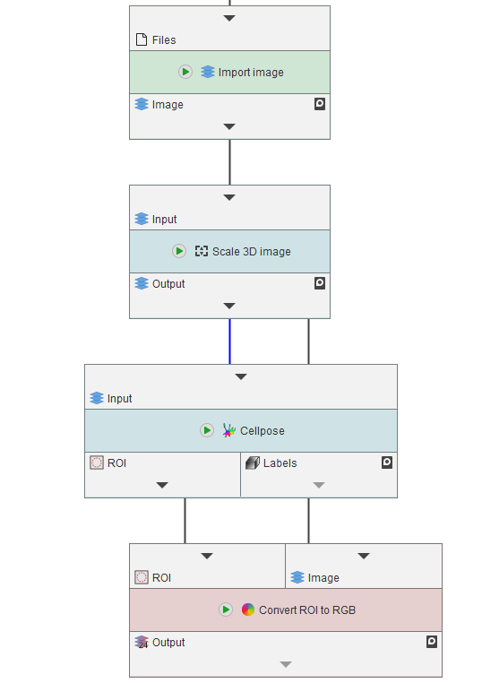
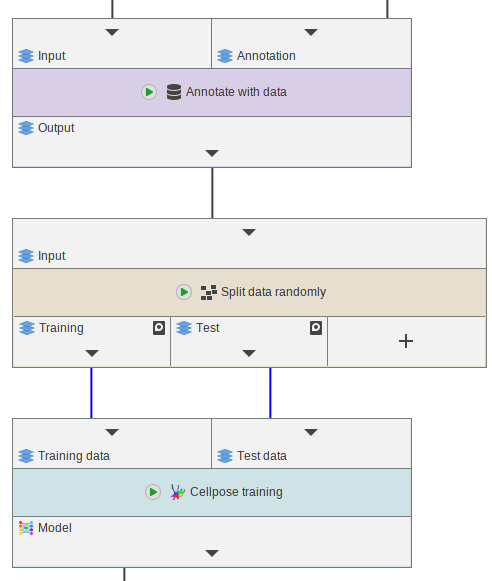

Cellpose integration
JIPipe provides an integration of Cellpose that both can apply segmentation, and training from within JIPipe.
Setting up Cellpose
Cellpose is a Python library and is integrated via the Python library. This means that you will need to setup a Python environment with Cellpose installed (follow the documentation here: https://github.com/MouseLand/cellpose) and provide the appropriate settings to JIPipe.
Alternatively, JIPipe provides automated installers (tested on Linux and Windows) that will download and setup Cellpose automatically.
To setup Cellpose, navigate to Project > Application settings > Extensions > Cellpose.
Here you can find a setting Cellpose Python environment that is enabled by default, meaning that
Cellpose is executed in a different Python environment than the one setup in the Python library (recommended).
You can disable the setting if you want.
To install Cellpose or select an existing Python environment, click the Select/Install button.
Here you can select an existing Conda environment, or let JIPipe install the CPU or GPU version of Cellpose.
GPU processing requires large amounts of VRAM. You can always disable GPU processing on a per-node basis if your hardware is not sufficient. Cellpose also will fall back to CPU processing if GPU processing cannot applied.
Especially on Windows, the installation of the GPU version takes a considerable time (30 min +). Due to buffered text output, you might not always receive progress info from the Conda installation process. We cannot fix this on our end.
nvidia-cuda-toolkit (please review the output of APT carefully, as nvidia-cuda-toolkit only works with specific driver versions).
On Windows, download the CUDA toolkit from the Nvidia homepage. Please restart JIPipe or Windows after installing the toolkit -
otherwise the installed files will not be found by Tensorflow.
Segmentation with Cellpose
Segmenting images with Cellpose is handled by the Cellpose node (Images > Deep learning > Cellpose).
It receives 2D or 3D images and, by default, outputs the ROI in ImageJ/JIPipe format (ROI Lists).

The node has a multitude of parameters that allow to customize its behavior and how Cellpose is executed:
- You can enable additional outputs, for example the probability map or the cell flows
- You can change the model to one of the pretrained ones (Cyto or Nuclei), or a custom pre-trained model (received via an input slot)
- The model and performance parameters
- Various thresholds used internally by Cellpose
- Enable augmentation or other tweaks
Training with Cellpose
JIPipe supports training a Cellpose model and size model via the Cellpose training node.
It can train from scratch, or continue training a predefined model (custom or Cyto/Nuclei).
JIPipe automatically saves all inputs in appropriate folders and runs the training CLI according to the Cellpose documentation.
Cellpose requires input images annotated with their respective mask labels. To annotate masks to the
image, use the Annotate with data node.
The output of this node are Cellpose model data that can be either saved to a file or further processed in JIPipe.
Test data is optional (that’s why the triangle is grey if disconnected). We still recommend to provide both training and test data sets. You can use the ‘Split data randomly (percentage)’ node to split data into two sets.

Troubleshooting
The most common issue is insufficient VRAM with GPU processing enabled. Please always ensure that issues are not caused by GPU problems (disable GPU processing to be sure!).
JIPipe automatically exports all relevant data and scripts into a temporary folder that, by default,
is automatically deleted on successful execution of the node.
You can always disable this behavior by disabling the Clean up data after processing setting. The folder is
always logged and can be accessed via Tools > Logs.
The logs also provide information about the exact Python commands that are executed. You can use this information to find out why there is a problem.